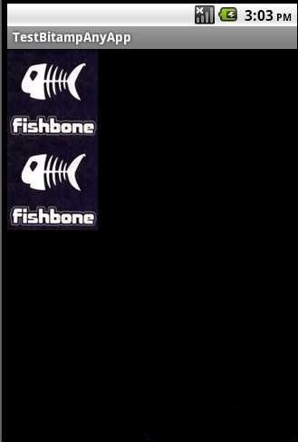

通过纯RGB数据流生成Bitmap对象
GOOGLE对于图像的读取处理，已经封装了Bitmap类和BitmapFactory类，可以说囊括了许多种读取图片数据的方式，但是如果我们只有纯RGB数据（byte[]）和位图宽和高又如何将数据上屏显示呢?
查看SDK文档，虽然没有关于byte[]数组的构建BITMAP对象的API
但是有[url=file:///C:/Program%20Files/android-sdk-windows/docs/reference/android/graphics/Bitmap.htmlcreateBitmap(int[], int, int, android.graphics.Bitmap.Config)]createBitmap[/url](int[] colors, int width, int height, Bitmap.Config config) 这个方法
于是就有了思路，就是将byte[]数组转化为int[]数组,以下是本人封装的一个类用以实现通过byte[]数据流构建BITMAP的对象：
public class MyBitmap { static public Bitmap createMyBitmap(byte[] data, int width, int height) {
int[] colors = convertByteToColor(data);
if (colors == null) {
return null;
}
Bitmap bmp = Bitmap.createBitmap(colors, 0, width, width, height,
Bitmap.Config.ARGB_8888);
return bmp;
}
// 将一个byte数转成int
// 实现这个函数的目的是为了将byte数当成无符号的变量去转化成int
public static int convertByteToInt(byte data) {
int heightBit = (int) ((data >> 4) & 0x0F);
int lowBit = (int) (0x0F & data);
return heightBit * 16 + lowBit;
}
// 将纯RGB数据数组转化成int像素数组
public static int[] convertByteToColor(byte[] data) {
int size = data.length;
if (size == 0) {
return null;
}
int arg = 0;
if (size % 3 != 0) {
arg = 1;
}
// 一般情况下data数组的长度应该是3的倍数，这里做个兼容，多余的RGB数据用黑色0XFF000000填充
int[] color = new int[size / 3 + arg];
int red, green, blue;
if (arg == 0) {
for (int i = 0; i < color.length; ++i) {
red = convertByteToInt(data[i * 3]);
green = convertByteToInt(data[i * 3 + 1]);
blue = convertByteToInt(data[i * 3 + 2]);
// 获取RGB分量值通过按位或生成int的像素值
color = (red << 16) | (green << 8) | blue | 0xFF000000;
}
} else {
for (int i = 0; i < color.length - 1; ++i) {
red = convertByteToInt(data[i * 3]);
green = convertByteToInt(data[i * 3 + 1]);
blue = convertByteToInt(data[i * 3 + 2]);
color = (red << 16) | (green << 8) | blue | 0xFF000000;
}
color[color.length - 1] = 0xFF000000;
}
return color;
}
}
以下是测试效果图：
